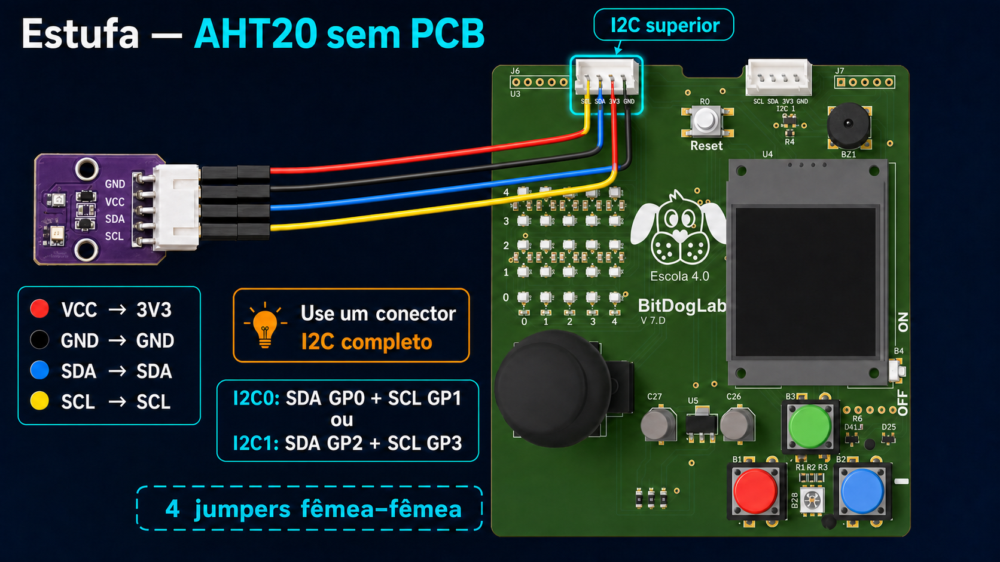
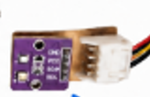
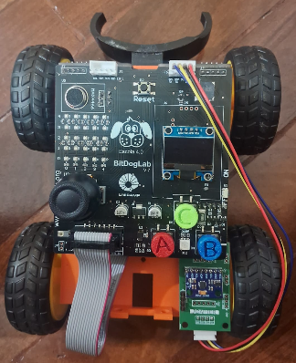
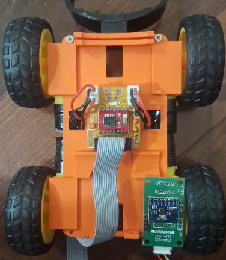
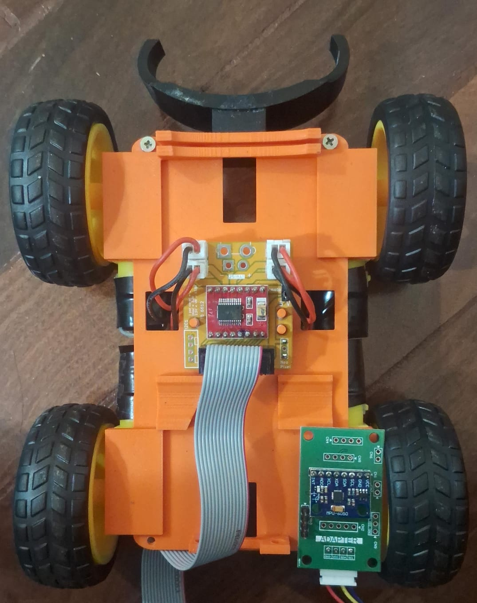

Dois conectores I²C
Eles são usados por sensores como AHT20 e MPU6050. Cada conector já reúne alimentação e comunicação.
I²C0SDA GP0 + SCL GP1I²C1SDA GP2 + SCL GP3Use sempre um par completo. Não misture SDA de um barramento com SCL do outro.
GUIA DE HARDWARE
Conheça a BitDogLab ou siga um tutorial para montar a estufa e o robô móvel mesmo sem as PCBs adaptadoras do laboratório.
A PLACA
A placa reúne o RP2040, a interface de usuário, o display e o circuito de alimentação. Para projetos externos, observe duas regiões: os conectores I²C superiores e o barramento de expansão inferior.

Eles são usados por sensores como AHT20 e MPU6050. Cada conector já reúne alimentação e comunicação.
I²C0SDA GP0 + SCL GP1I²C1SDA GP2 + SCL GP3Use sempre um par completo. Não misture SDA de um barramento com SCL do outro.
É o conector maior usado pela ponte H e por outros circuitos externos. Ele expõe GPIOs, 3V3, 5V e GND.
Leia a serigrafia ao lado do conector antes de colocar qualquer jumper.
Mostra textos, dados e feedback durante a execução.
Entradas prontas para interação e controle.
Saídas visuais já integradas à placa.
A alimentação e o monitor de tensão/corrente já fazem parte do conjunto.
PROJETO ESTUFA
O AHT20 mede temperatura e umidade. Sem a placa adaptadora, a mesma ligação é feita manualmente com quatro jumpers fêmea–fêmea.

VOCÊ VAI PRECISAR

LIGAÇÕES
| Pino AHT20 | BitDogLab | Função |
|---|---|---|
VCC | 3V3 | Alimentação lógica |
GND | GND | Terra comum |
SDA | SDA | Dados I²C |
SCL | SCL | Clock I²C |
I²C0 — SDA GP0 + SCL GP1
I²C1 — SDA GP2 + SCL GP3
A PCB organiza os sinais em um conector polarizado, que só encaixa na orientação correta e reduz a chance de inverter alimentação ou causar curto. Sem ela, os jumpers fazem a mesma conexão elétrica, mas cada fio precisa ser conferido individualmente.
Retire o USB e desligue a alimentação antes de mexer nos fios.
Confirme VCC, GND, SDA e SCL no seu AHT20; a ordem física pode variar entre fabricantes.
Use somente um conector I²C superior e siga a tabela.
Verifique principalmente 3V3 e GND. Depois, energize e use os blocos de temperatura e umidade.
PROJETO ROBÔ MÓVEL
Aqui não há desenho de fios: use as fotos para reconhecer os componentes e as tabelas como referência das conexões.



No laboratório, as PCBs e o cabo IDC de 14 pinos agrupam e polarizam as conexões. Na montagem manual, substitua esse conjunto por jumpers individuais entre o barramento inferior e a ponte H, conferindo um pino de cada vez.
PONTE H — CONTROLE E ALIMENTAÇÃO
| Pino TB6612FNG | BitDogLab | Função |
|---|---|---|
VM | 5V | Potência dos motores vinda da placa |
VCC | 3V3 | Alimentação lógica |
GND | GND | Terra comum |
AIN1 | GP4 | Direção A — entrada 1 |
AIN2 | GP9 | Direção A — entrada 2 |
PWMA | GP8 | Velocidade do canal A |
BIN1 | GP18 | Direção B — entrada 1 |
BIN2 | GP19 | Direção B — entrada 2 |
PWMB | GP16 | Velocidade do canal B |
STBY | GP20 | Habilita a ponte H |
A bateria e o INA226 já estão integrados à BitDogLab. Não adicione outro INA226 e não conecte bateria externa diretamente aos GPIOs ou ao pino 3V3.
MOTORES — SEM POLARIDADE FIXA
| Saída | Grupo de motores | Como ligar |
|---|---|---|
AO1 + AO2 | 2 motores do lado esquerdo | Em paralelo |
BO1 + BO2 | 2 motores do lado direito | Em paralelo |
Para os fios dos motores e da alimentação de potência, prefira cabos mais robustos e terminais isolados. Jumpers Dupont são indicados para os sinais de controle.
I²C — MPU6050
O MPU6050 pode usar qualquer um dos dois conectores I²C superiores. Assim como no AHT20, escolha um par completo.
| Pino MPU6050 | BitDogLab |
|---|---|
VCC | 3V3 |
GND | GND |
SDA | GP0 (I²C0) ou GP2 (I²C1) |
SCL | GP1 (I²C0) ou GP3 (I²C1) |
VOCÊ VAI PRECISAR
ANTES DE LIGAR